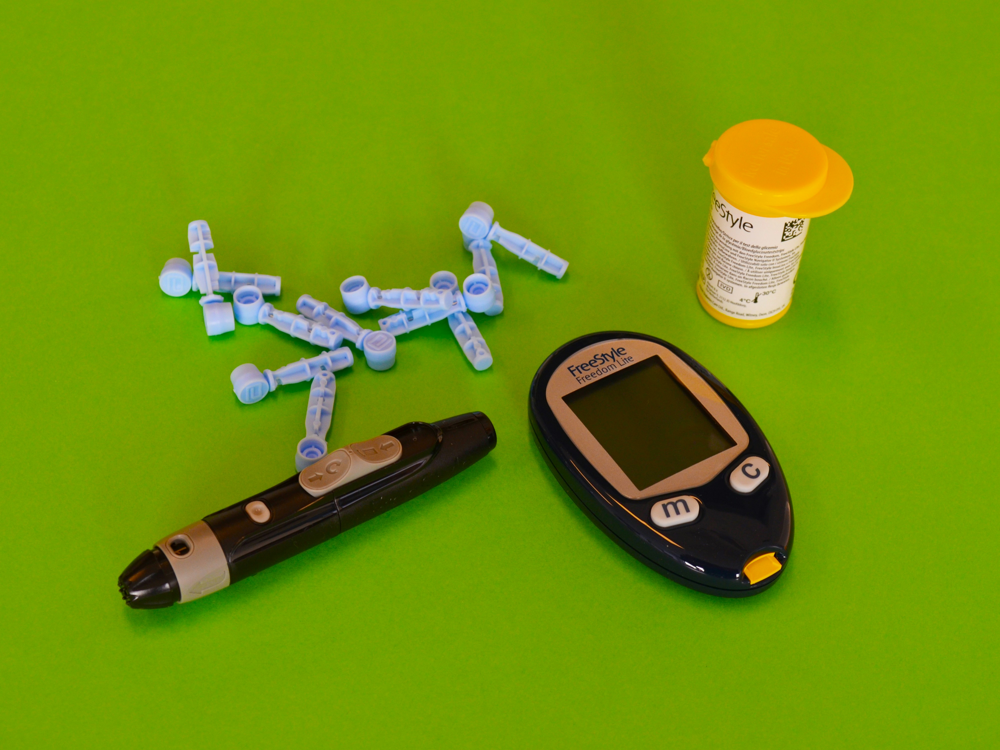
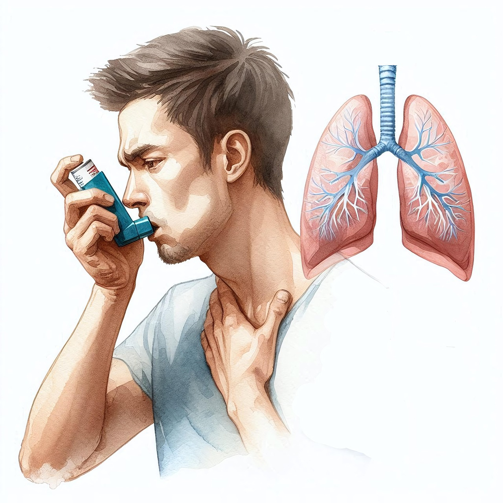

🩸 فقر الدم: أسبابه، أنواعه، والعلاج

🔍 ما هو فقر الدم؟
🔹فقر الدم هو حالة طبية تحدث عندما ينخفض عدد كريات الدم الحمراء أو تركيز الهيموغلوبين في الدم عن المعدل الطبيعي. الهيموغلوبين هو البروتين المسؤول عن نقل الأوكسجين إلى أنسجة الجسم. نقصه يؤدي إلى ضعف عام، تعب، دوخة، وصعوبة في التنفس
🧬 أنواع فقر الدم:
- فقر دم الناتج عن نقص الحديد
- الاكثر شيوعا
- يحدث بسبب نقص الحديد الضروري لتكوين الهيموغلوبين. و الحديد هو عنصر اساسي لصنع الهيموغلوبين
- أسبابه: نزيف مزمن، الدورة الشهرية، سوء تغذية، أو امتصاص ضعيف للحديد..
- ناتج عن نقص فيتامين B12 أو حمض الفوليك
- الكريات الحمراء تكون كبيرة الحجم وغير فعّالة.إنتاج خلايا دم غير ناضجة
-
يحدث فيها تدمير سريع لكريات الدم الحمراءقبل أن يعوضها الجسم
-
قد يكون السبب مناعي، دوائي، أو وراثي.
- مثل: الثلاسيميا والأنيميا المنجلية.
- سببها طفرات جينية تؤثر على إنتاج أو شكل الهيموغلوبين.
⚠️ الأعراض:
- الارهاق مزمن و شعور بالوهن
- شحوب في الوجه والجلد
- ضيق في التنفس خاصة اثناء المجهود
- صداع ودوخة
- تسارع ضربات القلب
- برودة في الأطراف
- تساقط الشعر و هشاشة الاظافر
🔍 تفسير الأعراض علميًا:
- التعب والدوخة: بسبب نقص الأوكسجين الواصل للخلايا والدماغ.
- شحوب الوجه: لأن كمية الدم تقل، فينقص التروية الدموية للجلد.
- ضيق التنفس: الجسم يحاول يعوّض نقص الأوكسجين بزيادة التنفس.
- تسارع ضربات القلب: القلب يحاول يضخ كمية أكبر من الدم لتعويض النقص
🧪 كيف يتم التشخيص؟
- فحص دم بسيط يُسمى الهيموغرام (NFS).
- يتم باستخدام تحليل دم شامل (CBC) لقياس:
- عدد كريات الدم الحمراء
- تركيز الهيموغلوبين
- حجم الخلايا (MCV).
- مستويات الحديد، B12، والفوليك أسيد
💊أدوية وفوائدها:
- الاسم العلمي: Fer Ferreux (مثل Tardyferon، Fero-Grad).
- يُستعمل في: فقر الدم بسبب نقص الحديد
- الشكل: أقراص أو شراب.
- يؤخذ قبل الأكل بنصف ساعة.
- ملاحظة: يسبب إمساك وأحيانًا غثيان.
- يستحسن تناوله مع فيتامين C (عصير برتقال) لزيادة الامتصاص.
- 2. فيتامين B12 (Cobalamine):
- يُستعمل في: فقر الدم كبير الكريات الناتج عن نقص B12.
- الشكل: حقن عضلية أو أقراص.
- الجرعة حسب وصف الطبيب
- ملاحظة: يجب تشخيص النقص قبل إعطائه.
- 3. حمض الفوليك (Vitamine B9):
- يُستعمل مع الحديد، خصوصًا عند النساء الحوامل
- يساعد في تكوين كريات دم حمراء سليمة
- يؤخذ يوميًا لفترة معينة حسب وصف الطبيب.
🥗 العلاج والوقاية:
✅ التغذية السليمة:
🔹 تناول اللحوم الحمراء،الكبد ،السبانخ، العدس، التمر.
🔹 استهلاك فيتامين C (مثل البرتقال) لأنه يساعد على امتصاص الحديد.
💊 المكملات الغذائية:
- مكملات الحديد (Tardyferon، Fero-Grad)، تؤخذ قبل الأكل.
- فيتامين B12: أقراص أو حقن، حسب نوع النقص.
- حمض الفوليك (B9): مهم في الحمل أو مع الأنواع الأخرى
- في الحالات الشديدة: نقل دم أو علاج خاص
📝
ملاحظة:
- تجنب تناول الكالسسوم (مثل الحليب) مع وجبات الحديد لأنه يُقلل من امتصاصه.
-
يجب تجنب الشاي مباشرة بعد الأكل لأنه يقلل من امتصاص الحديد.
-
راجعي الطبيب قبل البدء بأي مكملات غذائية..
📝 الخلاصة:
🔹فقر الدم مشكل صحي شائع لكن سهل التعامل معه.
المفتاح هو:
داء السكري من النوع الأول والثاني: الأسباب، الأعراض، والعلاج

🔍 ما هو داء السكري؟
🔹داء السكري هو اضطراب مزمن يتمثل في ارتفاع مستوى الغلوكوز (السكر) في الدم. يحدث هذا الارتفاع بسبب خلل في إنتاج الأنسولين أو في قدرة الجسم على استخدامه بشكل صحيح.
الأنسولين هو هرمون تفرزه البنكرياس ليساعد على إدخال السكر من الدم إلى الخلايا.
🧬 أنواع داء السكري:
-
1️⃣ النوع الأول (Type 1 Diabetes):
- مرض مناعي ذاتي.
- يصيب غالبًا الأطفال أو اليافعين
- السبب: الجهاز المناعي يهاجم خلايا البنكرياس اللي تنتج الأنسولين.
- يحتاج المريض حقن أنسولين يوميًا مدى الحياة
- 2️⃣ النوع الثاني (Type 2 Diabetes):
- الأكثر شيوعًا
- يصيب عادة البالغين (خاصة بعد سن 40) لكن بدأ يظهر عند الشباب أيضًا بسبب نمط الحياة
- يمكن التحكم فيه عبر الغذاء + الرياضة + أدوية فموية وأحيانًا الأنسولين.
- السبب: الجسم ما يستجيبش للأنسولين (مقاومة أنسولين) أو البنكرياس ما ينتجش كفاية.
- يصيب بعض النساء أثناء الحمل.
- غالبًا يختفي بعد الولادة لكن يزيد من خطر الإصابة بالنوع الثاني لاحقًا.
🧠 الأسباب الارتفاع سكر في دم
💢 السبب 💬 التفسير
- نظام غذائي سيئ كثرة السكريات والدهون تسبب مقاومة أنسولين.
- قلة النشاط البدني الخلايا تصير أقل حساسية للأنسولين.
- الوراثة إذا كان في العائلة مصابين، يزيد الخطر
- التوتر المزمن يرفع هرمونات تعاكس الأنسولين
- السمنة أهم سبب للنوع الثاني.
⚠️ الأعراض الشائعة لكلا النوعين:
- عطش مفرط
- تبول متكرر
- تعب وإرهاق
- رؤية مشوشة
- بطء التئام الجروح
- نقصان الوزن المفاجئ (في النوع الأول)
- رغبة دائمة في الأكل
- إصابات متكررة بالفطريات أو التهابات الفم واللثة
🧪 كيف يتم التشخيص؟
- الطبيب يطلب فحوصات دم باش يعرف نسبة السكر:
- التحليل القيمة المشبوهة
- تحليل السكر صائم (à jeun) ≥ 1.26 غ/لتر في مرتين
- تحليل بعد ساعتين من الغلوكوز ≥ 2.00 غ/لتر
HbA1c (تحليل طويل الأمد) ≥ 6.5%
- تحليل السكر صائم
- تحليل السكر بعد الأكل
- تحليل HbA1c (سكر تراكمي لآخر 3 أشهر)
- تحليل بول للبحث عن السكر أو الأجسام الكيتونية (في النوع الأول)
⛔ الأعضاء التي تتأثر:
- إذا لم يتعالج المرض، يستطيع ان يلحق ضرر:
- الدماغ: يزيد خطر السكتة الدماغية.
- القلب: ارتفاع ضغط وتصلب شرايين.
- العين: يسبب ضعف البصر أو حتى العمى.
- الأعصاب: تنميل، فقدان إحساس، قرح قدم.
- الكلى:يسبب فشل كلوي.
- الأعضاء الجنسية: ضعف جنسي عند الرجال.
🩺 العلاج:
- أنسولين دائم (قصير وطويل المفعول)
- متابعة يومية لمستوى السكر
- نظام غذائي متوازن
- نشاط بدني منظم (بحذر لتفادي انخفاض السكر)
- أدوية فموية مثل Metformin
- حمية غذائية لتقليل الوزن
- تقليل السكريات + زيادة الألياف
- رياضة منتظمة (30 دقيقة يوميًا)
- مراقبة السكر يوميًا باستعمال جهاز glucomètre
💊أدوية رئيسية:
- ضروري في السكري من النوع الأول، وأحيانًا النوع الثاني.
- يُحقن تحت الجلد.
- يوجد أنسولين سريع، متوسط، وطويل المفعول.
يعمل على خفض مستوى السكر في الدم
-
2. الميتفورمين (Metformine):
- الاسم التجاري: Glucophage.
- يُستعمل في: السكري من النوع الثاني.
- يقلل إنتاج الكبد للسكر ويحسن استخدامه في الخلايا.
- يؤخذ مع الأكل
- 3. سولفونيل يوريا (مثل Glibenclamide):
- تحفّز البنكرياس على إفراز الأنسولين
- يمكن أن تسبب انخفاض حاد في السكر.
- يجب تنظيم الوجبات معها
كيف نحمي أنفسنا؟ (الوقاية والعلاج)
- نظام غذائي متوازن (ألياف، بروتين، سكريات معتدلة).
- النشاط البدني 30 دقيقة يوميًا.
- النوم الجيد.
- التقليل من التوتر.
📝
ملاحظة:
🔹💡 مرض السكري ليس نهاية، بل بداية لحياة صحية!
إذا التزمت بالنظام والعلاج، تقدر تعيش طبيعي وتجنب جميع المضاعفات.
✅ الخلاصة:
داء السكري مرض مزمن لكنه قابل للتحكم.
الفهم الجيد للمرض + الالتزام بالعلاج + نمط حياة صحي = حياة طبيعية بدون مشاكل بإذن الله
ارتفاع ضغط الدم: الأسباب، الأعراض، والعلاج

🔍 ارتفاع ضغط الدم؟
🔹ارتفاع ضغط الدم(HTA) هو حالة مزمنة يكون فيها ضغط الدم داخل الشرايين مرتفعًا (قوة دفع الدم على جدران الشرايين مرتفعة كثيرا )عن المعدل الطبيعي.
يسبب هذا الضغط الزائد عبئًا على القلب والشرايين، مما قد يؤدي إلى مضاعفات خطيرة إذا لم يُعالج.
- يُعرف ضغط الدم الطبيعي بـ:
- الانقباضي (Systolique): 120 mmHg
- الانبساطي (Diastolique): 80 mmHg
- الضغط الانقباضي ≥ 140 mmHg
- أو الضغط الانبساطي ≥ 90 mmHg
🧬 أنواع ارتفاع ضغط الدم:
- 1️⃣ ارتفاع ضغط الدم الأولي (الأساسي):
- الأكثر شيوعًا (90% من الحالات).
- لا يوجد سبب مباشر واضح لكن مرتبط بالعمر، الوراثة، ونمط الحياة.
- يتطور تدريجيًا مع التقدم في العمر
- 2️⃣ ارتفاع ضغط الدم الثانوي:
- سببه مرض آخر مثل:
- أمراض الكلى
- مشاكل الغدة الكظرية
- تناول بعض الأدوية (مثل حبوب منع الحمل أو مضادات الالتهاب)
⚠️ الأعراض:
- أغلب المرضى لا تظهر عليهم أعراض، لذلك يُسمى "القاتل الصامت"
لكن أحيانًا قد تظهر:
- صداع قوي (خاصة في الصباح)
- دوخة ودوار
- تشوش الرؤية
- ألم في الصدر
- خفقان القلب
- نزيف الأنف أحيانًا
🧠 المضاعفات الخطيرة:
- إذا لم يُعالج الضغط، يسبب مضاعفات خطيرة على:
- تضخم عضلة القلب، فشل قلبي.
- سكتة دماغية أو نزيف دماغي
- تلف الأوعية الدموية، ضعف البصر أو فقدانه
- فشل كلوي مزمن.
- تصلب الشرايين، ضعف الدورة الدموية
🧪 كيف يُشخص؟
- جهاز قياس ضغط الدم (Tensiomètre)
- قياسات متكررة للتأكد من ثبات الارتفاع
- تحاليل دموية (لفحص الكلى + الكوليسترول)
- تحليل البول
- تخطيط القلب أو فحوصات إضافية حسب الحالة
⛔ عوامل الخطر:
- الإفراط في استهلاك الملح
- السمنة
- التدخين
- شرب الكحول
- الوراثة
- التوتر والقلق المزمن
- قلة النشاط البدني
- ط نظام غذائي غني بالدهون والمقليات.
- التقدم في العمر.
- استعمال بعض الأدوية.
🥗 العلاج:
- تقليل استهلاك الملح (أقل من 5 غرام يوميًا)
- أكل فواكه وخضار وألياف
- ممارسة الرياضة بانتظام
- فقدان الوزن
- التوقف عن التدخين
- تقنيات الاسترخاء
💊 العلاج الدوائي:
- 1. مثبطات الإنزيم المحول للأنجيوتنسين (IEC):
- مثل: Enalapril – Ramipril.
- توسّع الأوعية وتقلل الضغط.
- ملاحظة: قد تسبب سعالًا جافًا.
- 2. محصرات قنوات الكالسيوم (Calcium Channel Blockers):
- مثل: Amlodipine.
- تمنع تقلص الأوعية وتقلل الضغط.
- آثار جانبية ممكنة: تورم ف الساقين.
- 3. مدرات البول (Diurétiques)
- مثل: Hydrochlorothiazide.
- تقلل كمية السوائل في الجسم → خفض الضغط.
- ملاحظة: مراقبة الأملاح في الدم ضروري.
- 4. محصرات بيتا (Bêta-bloquants):
- مثل: Atenolol – Bisoprolol.
- تقلل من سرعة وقوة ضربات القلب.
- تُستعمل أيضًا عند مرضى القلب.
📝
الملاحظة:
- ارتفاع الضغط لا يشفى نهائيًا، لكن يمكن السيطرة عليه مدى الحياة بنمط حياة صحي وأدوية منتظمة
- مراقبة الضغط بانتظام في المنزل (كل أسبوع على الأقل).
- كل حالة تختلف، فلازم المتابعة الفردية مع الطبيب
- لا تشعر بالأعراض؟ لا يعني أنك بخير!
راقب ضغطك بانتظام، واتبِع نمط حياة صحي
✅ الخلاصة:
ارتفاع ضغط الدم مرض خطير إذا تُرك دون علاج،
لكنه قابل للسيطرة عليه بسهولة إذا التزمت:
- بقياس منتظم
- بنظام غذائي صحي
- وبالعلاج الدوائي تحت إشراف الطبيب
🫁 الربو: أسبابه، أعراضه، وكيفية التعامل معه

🔍 ما هو الربو؟
🔹الربو (Asthma) هو مرض التهابي مزمن يصيب الجهاز التنفسي، يتميّز بالتهاب مزمن في القصبات الهوائية يؤدي إلى تضيقها مؤقتًا، مما يسبب صعوبة في التنفس
.
- الربو مرض متكرر وقابل للعلاج لكنه يحتاج متابعة مستمرة.
- الربو قد يكون خفيف أو شديد، مؤقت أو دائم، ويختلف من شخص لآخر.
- ماذا يحدث في رئتي مريض الربو؟
- 1. تتضيق الشعب الهوائية.
- 2. تنتفخ الجدران وتلتهب.
- 3. يُفرز مخاط كثيف يغلق المجاري التنفسية جزئيًا.
الأسباب وعوامل الخطر:
- المحسسات (مثل الغبار، الطلع، شعر الحيوانات)
- العدوى التنفسية المتكررة (خصوصًا في الطفولة)
- العوامل الوراثية إذا كان أحد الوالدين يعاني من الربو
- التلوث الهوائي أو دخان السجائر
- الانفعالات النفسية والضغط العصبي و توتر
- التمارين الرياضية عند بعض الأشخاص (الربو المجهودي)
- مواد كيميائية عطور قوية، منظفات.
- طقس الهواء البارد أو الرطب.
⚠️ الأعراض الشائعة:
- نوبات متكررة من ضيق التنفس.
- ضيق في التنفس، خصوصًا أثناء الليل أو الصباح الباكر
- صوت صفير (أزيز) أثناء الزفير
- سعال مستمر، خاصةً ليلاً
- شعور بانقباض في الصدر
- صعوبة في التنفس عند بذل مجهود أو التعرض لمحفزات
- تتفاقم الأعراض في البرد أو عند التعرض لمهيجات
🔬 كيف يتم التشخيص؟
- يقوم الطبيب بالتشخيص اعتمادًا على:
- الأعراض السريرية
- الاستماع إلى الصدر (صفير تنفسي)
- اختبار وظائف الرئة: قياس التنفس(يقيس سعة رئتين) (Spirométrie)
- أحيانًا تحاليل دموية أو اختبار تحسس
💊 العلاج والتحكم بالربو:
💊 الأدوية المستعملة:
- 2. أدوية التحكم اليومي للوقاية:
- كورتيكوستيرويد مستنشق (مثل: Beclomethasone):
- يقلل الالتهاب ويمنع تفاقم الحالة.
- موسعات طويلة المفعول (مثل: Salmeterol):
- تُستعمل مع الكورتيكويدات.
- الطبيب هو من يحدد الجرعة ونوع البخاخ المناسب حسب شدة الربو.
ماذا تفعل أثناء نوبة ربو؟🆘
- استعمل البخاخ السريع .
- ابقَ جالسًا بهدوء وخذ أنفاسًا عميقة.
- إذا لم تتحسن الأعراض بعد 10-15 دقيقة، اتصل بالإسعاف فورًا.
✅ نصائح مهمة:
- تجنب المحفزات مثل الغبار، التدخين، البرد
- تنظيف البيت بانتظام
- التحكم في التوتر والقلق
- التمرين المنتظم لكن بحذر
- ابتعاد عن الحيوانات إذا كنت حساسة لها.
- تغطية الأنف في الجو البارد.
- استرحي بعد مجهود ولا تجهدي نفسك.
- استعملي الأدوية بانتظام كما وصفها
📝 الخلاصة:
🔹الربو ليس عيبًا ولا عائقًا.
مع العلاج المناسب، يمكن للمصاب أن يعيش حياة طبيعية ويزاول دراسته أو عمله دون مشاكل.
السر في: الالتزام بالعلاج + تجنب المحفزات
القولون العصبي (IBS): كل ما تحتاج معرفته

❓ ما هو القولون العصبي؟
🔹القولون العصبي هو اضطراب مزمن يُصيب القولون (الأمعاء الغليظة)، يتميز بآلام متكررة في البطن وتغيّرات في الإخراج (إسهال، إمساك، أو الاثنين معًا) دون وجود خلل عضوي واضح.
- يعني الطبيب لا يصيب مشكل في التحاليل أو الأشعة، لكن المريض يعاني من أعراض حقيقية
🧬 الأسباب بالتفصيل:
🔹الدماغ والأمعاء مرتبطين، ولهذا يُعتبر القولون العصبي "متلازمة الأمعاء والدماغ".
أي توتر نفسي أو قلق مستمر يزيد من حساسية الأمعاء ويؤدي لتشنجات.
- الحركة قد تكون سريعة = إسهال
- أو بطيئة = إمساك
- أو غير منتظمة = تناوب
- 4. تغير في البكتيريا النافعة:
- نقص البكتيريا المفيدة في الأمعاء يؤثر على الهضم ويزيد التهيج.
⚠️ الأعراض بالتفصيل:
🔹 آلام البطن:
- في الجهة اليسرى أو أسفل البطن
- تتحسن بعد التبرز
- تزداد بعد الأكل أو التوتر
🔹غازات وانتفاخ:
- شعور بالامتلاء، تجشؤ، وانتفاخ البطن
🔹اضطرابات الإخراج:
- إما إسهال مائي، خاصة صباحًا
- أو إمساك مزمن مع صلابة البراز
- أو تناوب بينهما
⚠️ أعراض أخرى:
- قلق وتوتر مستمر
- مشاكل في النوم
- صداع أحيانًا
- تعب وإرهاق عام
💊 أدوية القولون العصبي (IBS) بتفصيل:
- 1. مضادات التشنج (Antispasmodics)
🔹 مثال:
- Duspatalin (المادة الفعالة: Mebeverine)
🔹 الوظيفة:
- يرخي عضلات الأمعاء ويقلل التقلصات
🔹 متى يُستخدم:
- عند وجود ألم، مغص، تقلصات بعد الأكل أو عند التوتر
🔹 ملاحظة:
- يؤخذ 2 مرات في اليوم، قبل الأكل بـ 20 دقيقة
- 2. مضادات الإسهال (Antidiarrheals)
🔹 مثال:
- Loperamide (اسم تجاري شائع: Imodium)
🔹 الوظيفة:
- يبطئ حركة الأمعاء، يخلي البراز أكثر تماسكًا
🔹 متى يُستخدم:
- إذا كان القولون العصبي يسبب إسهالًا متكررًا
🔹 ملاحظة:
- لا يُستخدم بشكل يومي إلا عند الضرورة
- 3. الملينات الخفيفة (Laxatives)
🔹 مثال:
- Lactulose
- Movicol (polyethylene glycol)
🔹 الوظيفة:
- تسهّل خروج البراز وتخفف الإمساك
🔹 متى يُستخدم:
- إذا كانت الحالة مصاحبة بإمساك مزمن
🔹 ملاحظة:
- يفضل تجنب الملينات القوية لأنها قد تهيج الأمعاء
- 4. مضادات الاكتئاب بجرعة خفيفة (Low-dose antidepressants)
🔹 مثال:
- Amitriptyline (بجرعات منخفضة جدًا)
🔹 الوظيفة:
- يقلل إشارات الألم من الجهاز العصبي
- مفيد للي يعانون من توتر مزمن وألم بطني دائم
🔹 متى يُستخدم:
- لما تكون الأعراض مرتبطة بقلق واكتئاب أو ألم عصبي
🔹 ملاحظة:
- لا يُستعمل إلا تحت إشراف طبي
- 5. البروبيوتيك (Probiotics)
🔹 مثال:
- Enterogermina
- Probiotic Complex
- Florastor
🔹 الوظيفة:
- تحسن توازن البكتيريا النافعة في الأمعاء
- تقلل من الانتفاخ والإسهال والغازات
🔹 متى يُستخدم:
- بشكل يومي لمدة 2-4 أسابيع
🔹 ملاحظة:
- متوفرة على شكل كبسولات أو شراب
🥗 النظام الغذائي المناسب:
✅ ما يجب فعله:
- أكل الألياف (خضار مطبوخة، فواكه، نخالة)
- شرب الماء بكثرة (2 لتر يوميًا)
- مضغ الطعام جيدًا
- أكل وجبات صغيرة منتظمة
🚫 ما يجب تجنبه:
- المقليات والدهون
- القهوة والشاي الأسود
- البقوليات بكثرة
- الحليب إذا لاحظت أنه يهيج القولون
- الأكل بسرعة أو أثناء التوتر
✅نصائح حياتية مهمة:
- مارس تمارين الاسترخاء (تنفس عميق، يوغا)
- خصص وقت للراحة والنوم
- تجنب الجدل والنقاشات المرهقة
- لا تتصفح الهاتف أثناء الأكل
📝 الخلاصة:
🔹القولون العصبي ليس مرضًا خطيرًا، لكنه مزعج ويتطلب: